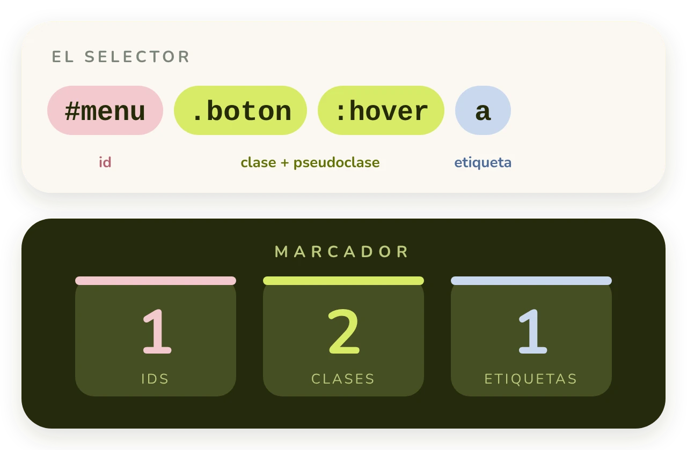

Izquierda a derecha
Se compara primero la columna de ids; solo si empatan se mira la de clases, y luego la de etiquetas.
1 · 0 · 0 > 0 · 9 · 9
Cuando dos reglas le dan estilos distintos al mismo elemento, el navegador tiene que decidir cuál gana. Para eso le da a cada selector un puntaje de tres números, como el marcador de un partido: ids · clases · etiquetas.
Se comparan de izquierda a derecha: un solo id le gana a cualquier cantidad de clases, y una sola clase le gana a cualquier cantidad de etiquetas. Abajo encuentras un marcador de ejemplo y 10 selectores con su puntaje.

MARCADOR DE EJEMPLO
header .menu a.activo::before
header, a y ::before suman 3 etiquetas; .menu y .activo suman 2 clases; no tiene ids. Su puntaje es 0 · 2 · 3.
¿QUIÉN GANA?
vs
Se compara de izquierda a derecha: en la primera columna 1 es más que 0, así que gana #titulo aunque el otro tenga 3 clases.
Se compara primero la columna de ids; solo si empatan se mira la de clases, y luego la de etiquetas.
1 · 0 · 0 > 0 · 9 · 9
Si dos selectores tienen el mismo puntaje, gana la regla que está más abajo en el CSS.
.a { } .b { } → gana .b
Lo que escribes en el atributo style="" del HTML le gana a cualquier
selector del archivo CSS.
<p style="color: red">
Pasa por encima de todo el marcador. Sirve en emergencias, pero vuelve el CSS difícil de arreglar.
color: red !important;